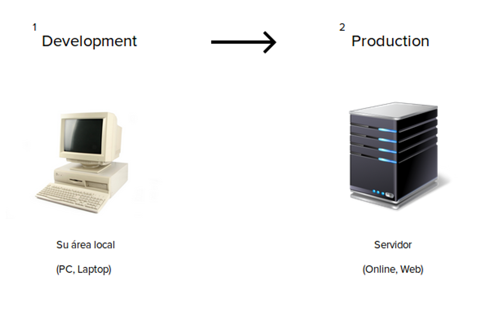
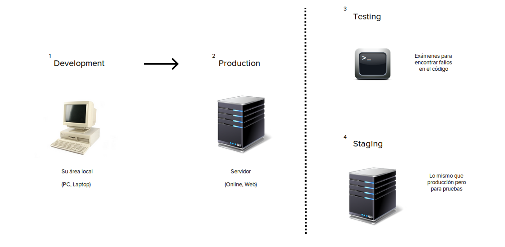
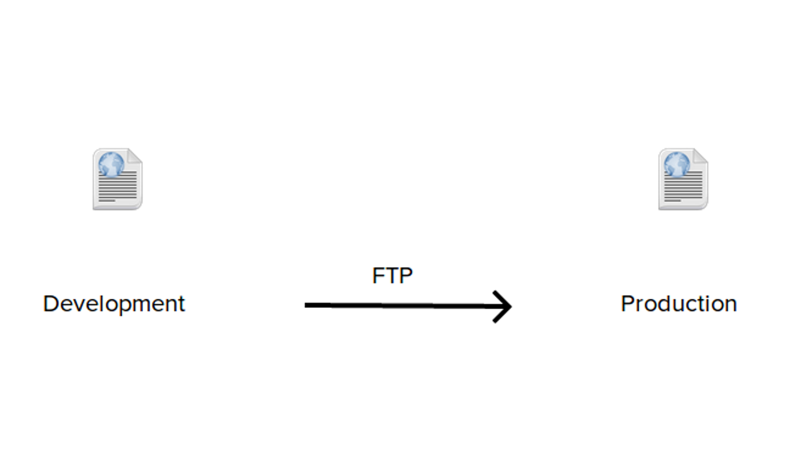
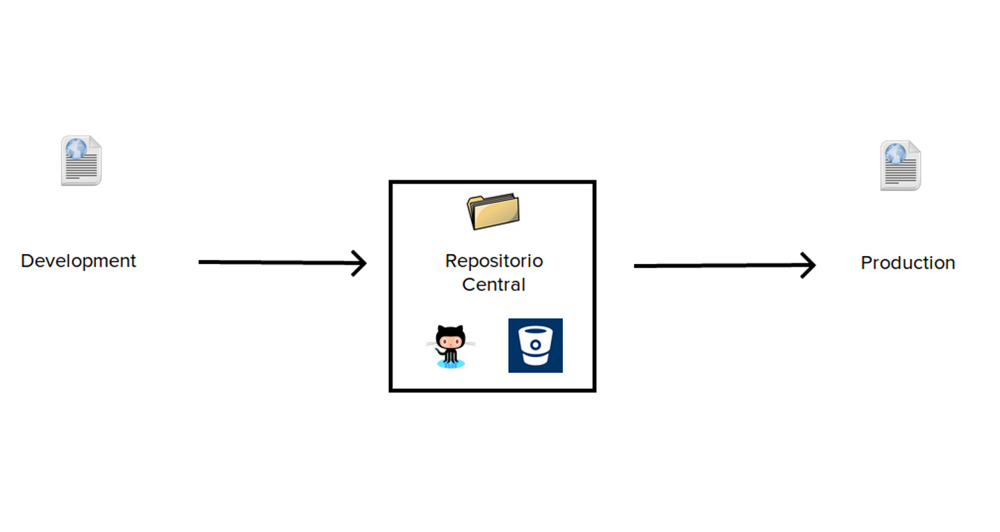
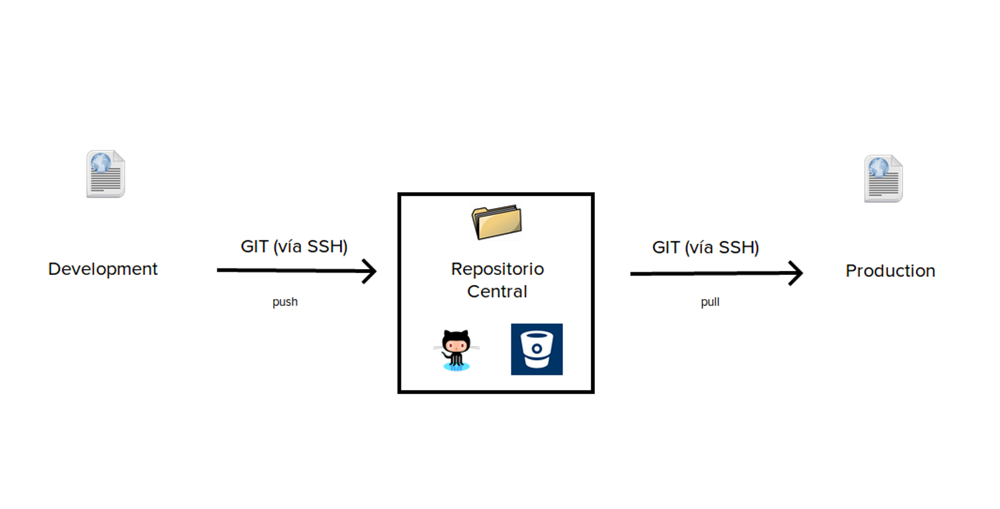
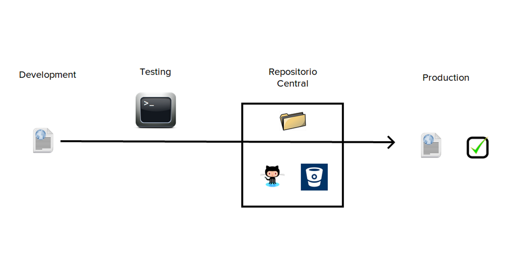
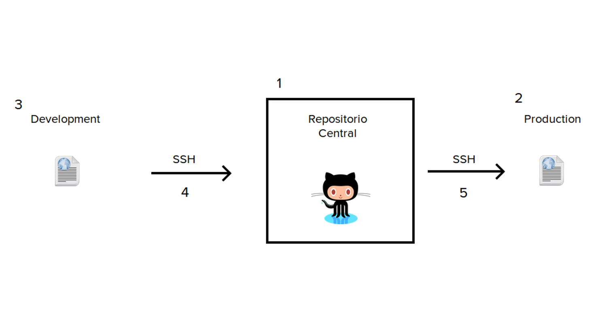

Deployment con Git
Por Miguel Nieva / @mikenieva
¿Por qué existe el Deployment?
Por que es la manera de llevar tus proyectos al mundo
¿Qué es un deployment?
Todas las actividades que hacen a un proyecto de software disponible para su uso
Ambientes Básicos
Ambientes Completos

Lo Común
* Se pierde el código, se pierde todo
* Configuraciones y developers nuevos al proyecto
* Si el código falla en producción, regresar al momento anterior es un caos
Lo Óptimo
Deploy Básico
Analizando Deploy Básico

* SSH = Secure Shell (Copiar datos de forma segura)
* Manual
Deploy Avanzado

$ cap production deploy* Automático (Configuras una vez)
* 1 Click And Go
* Capistrano - Mina
Let's Deploy It

1) Cuenta en GitHub
2) Server con acceso SSH
3) App
4) Llave ssh (Local -> Central) + Git Push
5) Llave llave ssh (Central -> Server) + Git Pull